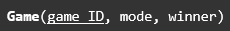
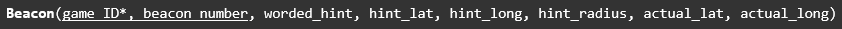
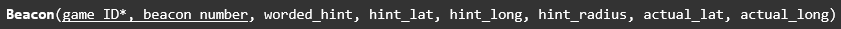
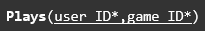
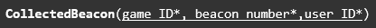
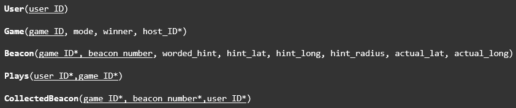

COSC1078 - Intro to IT - Our IT Project
Step 1: Map Strong Entities
Step 2: Map Weak Entities
Step 3: Map 1:1 Relationships
No 1:1 Relationships
Step 4: Map 1:N Relationships
Hosts Relationship:
Beacon OF Relationship:
Step 5: Map M:N Relationships
Plays Relationship:
Beacon:
Step 6: Multi-valued Attributes
No multivalued attributes
Step 7: Map higher-degree relationships
No higher degree relationships
Final Relational Model:
The SQL database was the first tangible artifact that we generated. There were some difficulties in the creation of the database as we used MYSQL, which has slightly different SQL syntax when compared to the database management system we were most confident with, SQLITE.
The backend development was one of the most crucial aspects of our projects. It connects the SQL database with the frontend progressive web application. The backend is running on the NodeJS framework, which allows for full stack web development with JavaScript. The NodeJS application uses a module called “Express” that allows for us to serve webpages and serve API requests from the frontend.
One of the hardest sections of the backend development was accounting for errors. No code is perfect and especially not any that is built in 3 weeks, thus we needed to implement measures to avoid the server crashing. If the backend was to crash, it would normally need to be manually restarted by the server manager and might leave the service down for an extended period. Thus, we added catch all error protection where if an error is encountered the program just automatically reboots. If this project was to be continued in the future, this should be removed and proper error prevention and detection strategies should be implemented, but in our timeframe, we could not implement this.
A lot of the core functionality is missing from our final project, due to the sheer complexity of those sections. Currently, the project is just in a prototype stage, with the service not accepting any user registrations, game creations, or admin controls. Currently only pre generated accounts can access the service and play games they have automatically been registered in.
The SQL database we initially created is able to support all of our core features but implementing them in the backend program and frontend code was a challenge and we were only able to get a portion of the core features implemented.
Backend Code: https://github.com/sanchits2003/INTROTOIT3/tree/main/backend
The frontend development for this project was important as without it, we wouldn’t have a semi-functioning prototype. In a nutshell the plan was to use our wireframes previously created as a template and then from there, create the actual prototype on Bootstrap Studio.
Initially, I assumed that it would be a simple application, such as one that would allow me to just pick an object and drop it onto the screen. However, upon the first hour or so of using Bootstrap, I found that it was not that easy. There was actually a lot more features than I expected, which meant that it had a deeper learning curve. For example, the positioning of certain objects such as a heading onto the page required modifications to the html code, which took me a while to figure out how to use.
After about a week of fiddling around with Bootstrap as well as watching a few tutorial videos, I finally was able to actually get started and create the application prototype.
The frontend code development was extremely challenging in this project. Connecting the design elements created for the progressive app and making them functional was very time consuming. Additionally, the front-end application had trouble connecting with the backend server due to browser sandboxing restrictions enforced due to them being on different domains. In the end, we were able to shift all the codebase into one domain to circumvent that challenge.
Even though we had an SQL database capable of supporting all functions of our project plan and front-end design that had component locations to service all those functions, we were only able to implement a small subset of what we would have liked to. Due to the process being time consuming, we ultimately had to settle with an extremely locked-down prototype.
Frontend Code: https://github.com/sanchits2003/INTROTOIT3/tree/main/backend/public
We decided to create some advertising material to showcase our service to future users.
As of this assignment's submission, we have not built a fully functional service, which was expected by our initial project plan.
Currently while the SQL database and Frontend desig nare fully featured, alot of our core functionality is not implemented due to the amount of time required to program them.
There is only one proficient developer in this group thus as predicted in our project plan, the artifacts we have are in prototype stage.
Access prototype web application: